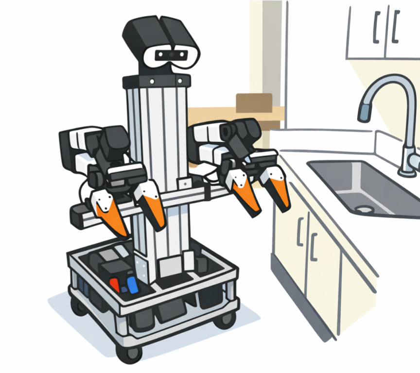
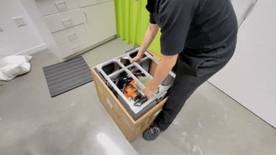
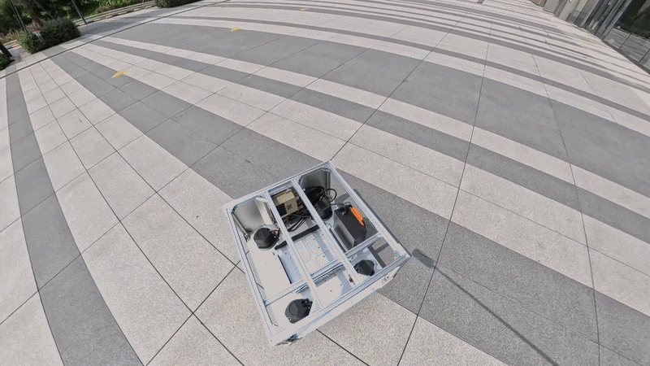
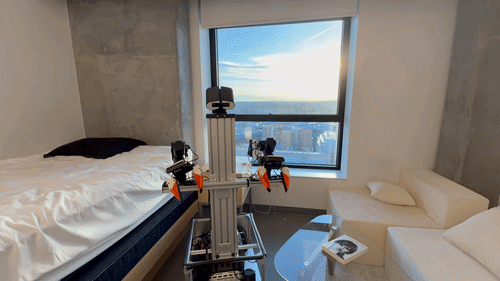

Simple Mobile
-
Haoyu Xiong
MIT CSAIL
Apr 2026

Motivation
Mobile manipulation is not just putting arms on wheels. It introduces a different class of challenges to robotics research, such as partial observability, whole-body control, and human-to-robot interface design for data collection.
In recent years, industry has demonstrated impressive mobile manipulation systems. In academia, however, building such a system from scratch is still engineering-heavy. Researchers often spend significant time on hardware setup, integration, and debugging before they can get to the actual research questions.
Simple Mobile came out of this gap. It is designed for robotics enthusiasts, beginners, and researchers who want to get started with mobile manipulation. With support from hardware vendors, you can now purchase an out-of-box hardware kit directly, without having to build everything from scratch. We also provide a plug-and-play codebase for the robot control, data collection, model training, and inference.
Simple Mobile is a byproduct of the author’s research projects, and we put together this tutorial to make getting started a little easier. We hope it encourages more open-source efforts in the community, and ultimately helps build better infrastructure for research.
Design Choices
To keep the system simple, we mount two low-cost arms on top of a mobile base, much like Mobile ALOHA. From there, we choose to: 1) use components that can be purchased directly from hardware vendors, and 2) keep the system compact by using a holonomic[1] mobile base with a small footprint.
Prior work, such as TidyBot++ and Sunday Robotics has demonstrated the effectiveness of a holonomic mobile base for mobile manipulation, particularly when studying whole-body control. At the same time, building the original TidyBot++ base can be time-consuming, since it involves assembling more than one hundred parts. Fortunately, with support from the hardware vendor, HexFellow provides an out-of-the-box kit for the TidyBot++ holonomic base and mounting frames. This Hex mobile base retains the same form factor and actuators of the original TidyBot++ mobile base, while offering improved manufacturing quality and reliability. For the arms, we use YAM because it is well documented and supported by a large user community. There are also several similar alternatives, such as ARX arms.



[1] What is a holonomic mobile robot?
A holonomic mobile robot is a robot whose base can move freely in any direction on a plane without needing to turn first, much like a floating office chair. In practice, this usually means it can move forward and backward, side to side, and rotate, with these motions controlled independently and simultaneously. Read more
Hardware Components
The Simple Mobile robot is a self-contained system consisting of: 1) a mobile base, 2) two arms, 3) one head camera and two wrist cameras, 4) a computer, 5) a mounting torso, and 6) a power bank. Check out the hardware guide for more details.
Data Collection
To keep data collection simple, without requiring additional devices, we adapt the iPhone teleoperation interface from the one used in TidyBot++.
We have a joystick pad on the iPhone to control the velocities of the mobile base, and use the 6-DOF pose tracking of the iPhone to control the robot arms.
Checkout the data collection guide for more details about the teleoperation interface and data collection pipeline.
Training a Diffusion Policy
We provide a plug-and-play codebase for training a diffusion policy on the collected data. The diffusion policy takes three camera views as input, including one from the head camera and two from the wrist cameras, along with the proprioceptive state of the arm poses. It outputs velocity commands for the mobile base and pose commands for the arms, which are then executed by the robot’s low-level controller. Checkout the model training guide for more details about the training and inference pipelines.
Getting the Hardware Kit
HexFellow provides an out-of-box kit for the mobile base and mounting frames, which can be purchased directly from their website. The arms can be purchased from the arm vendor, and the rest of the components can be purchased from Amazon online retailers. Check out the hardware guide for more details.
Fill the form if you are interested in the hardware kit, and we can help accelerate the process.
Acknowledgment
I would like to thank Jimmy Wu for his helpful feedback on this tutorial. The code is adapted from TidyBot++, PyRoki and the design draws inspiration from Vision in Action, TidyBot++, and CMU Door Opening Project.